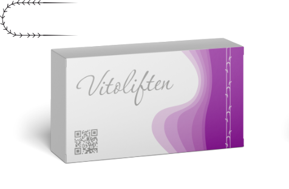

Что такое нитевой лифтинг
Нитевой лифтинг – это малоинвазивная (т.е. низкотравматичная) процедура, направленная на подтяжку кожи лица и тела с помощью специальных армирующих нитей. Они формируют устойчивый каркас и поддерживают ткани человека в нужном положении. Нити абсолютно
безопасны и рассасываются со временем. Любая женщина даже при современном ритме жизни хочет оставаться как можно дольше молодой и привлекательной. При этом тратить минимум времени на уход за собой. Поэтому многие выбирают современные
безоперационные методики косметологии с кратчайшим периодом реабилитации. Например, нитевой лифтинг тела и лица, который позволяет добиться заметного результата всего за один сеанс.
До
После
Преимущества нитей

Заметная подтяжка тканей без операции, за одну процедуру.
Возможность пластики, коррекции черт лица, не остаётся рубцов, шрамов и других следов вмешательства.
Подтяжка не меняет мимику и сохраняет естественные, гармоничные черты лица.
Каждая нить в индивидуальной стерильной упаковке.
Игла с атравматичным концом. Она не повреждает ткани, а расслаивает их, а технология установки исключает риск повреждения кровеносных сосудов или нервных окончаний.
Результат после введения нитей заметен сразу — кожа подтягивается, исчезает дряблость, повышается упругость.
Отличная фиксация мягких тканей за счёт типа насечек: разнонаправленные, однонаправленные, оптимальное расстояние между насечками, эффективная длина насечки и нити.
Каталог

Vitoliften Classik
Рассасывающиеся нити

Vitoliften Classik
Нерассасывающиеся нити
О компании
Нити с насечками – имеют на поверхности «зацепки», что улучшает качество их фиксации в тканях. Вводятся на глубину 4-5 мм, разрезы для этого не требуются – нити устанавливаются с помощью тонких проколов по линиям, заранее намеченным косметологом.
Существует много способов их установки — а значит, и много возможностей подтяжки. Это не только лифтинг и коррекция черт лица, но и пластика, а также армирование кожи в области живота, коленей, груди и в других зонах. Нитевой лифтинг обеспечивает комплексный
эффект пластики и омоложения.
Читать далее
Виды и типы изготавливаемых изделий
Виды насечек на нити:
- Однонаправленные
- Разнонаправленные
Типы насечек на нити:
- Спирально расположенными по всей поверхности нити
- Насечки расположены в одной плоскости по всей длине нити
Атравматические хирургические иглы изготавливаются из специальных сплавов нержавеющей хирургической стали. Именно четко подобранный состав стали обеспечивает все необходимые функциональные характеристики иглы: прочность, ковкость и остроту.
Типы игл:
- Тупоконечные
- Таперкат
- Режущие
Также иглы могут быть в различном исполнении, как прямые так и изогнутые
Показания к применению
Возрастные изменения
Восстановление эластичности
Коррекция нависающего века
Коррекция гравитационного птоза и его последствий
Уплотнение и улучшение структуры кожи
Разглаживание носогубных складок, морщин марионетки, заломов между бровями
Улучшение текстуры, сужение пор, восстановление здорового цвета лица
Задать вопрос
Для воплощения в жизнь разработок ведущих специалистов страны в области игольных и высокоточных технологий, таких как получение сверхчистых поверхностей игл, ионновакуумных цветообразующих покрытий, трёхступенчатой прецизионной заточки и выполнение особо прочных замковых соединений хирургических нитей с иглами, в 1990 году было создано предприятие "ВОЛОТЬ".
Для воплощения в жизнь разработок ведущих специалистов страны в области игольных и высокоточных технологий, таких как получение сверхчистых поверхностей игл, ионновакуумных цветообразующих покрытий, трёхступенчатой прецизионной заточки и выполнение особо прочных замковых соединений хирургических нитей с иглами, в 1990 году было создано предприятие "ВОЛОТЬ".
Задайте свой вопрос
Наш блог
Атравматические хирургические иглы изготавливаются из специальных сплавов нержавеющей хирургической стали.
Атравматические хирургические иглы изготавливаются из специальных сплавов нержавеющей хирургической стали.
Атравматические хирургические иглы изготавливаются из специальных сплавов нержавеющей хирургической стали.
Атравматические хирургические иглы изготавливаются из специальных сплавов нержавеющей хирургической стали.
Контакты
109129, г. Москва, ул. 8-я Текстильщиков. Стр. 2 офис 421
info@vitoliften.ru
+7 921-258-65-71
Написать сообщение